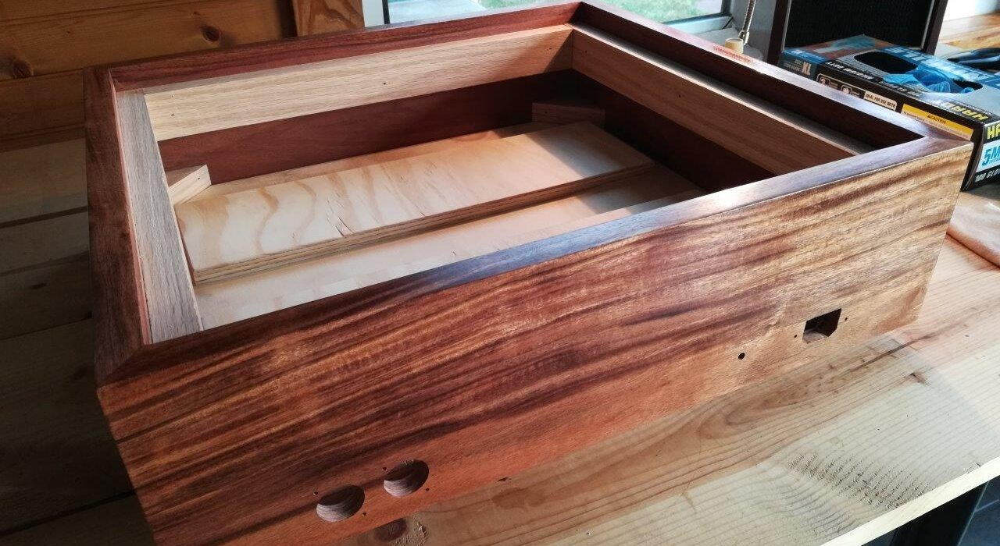
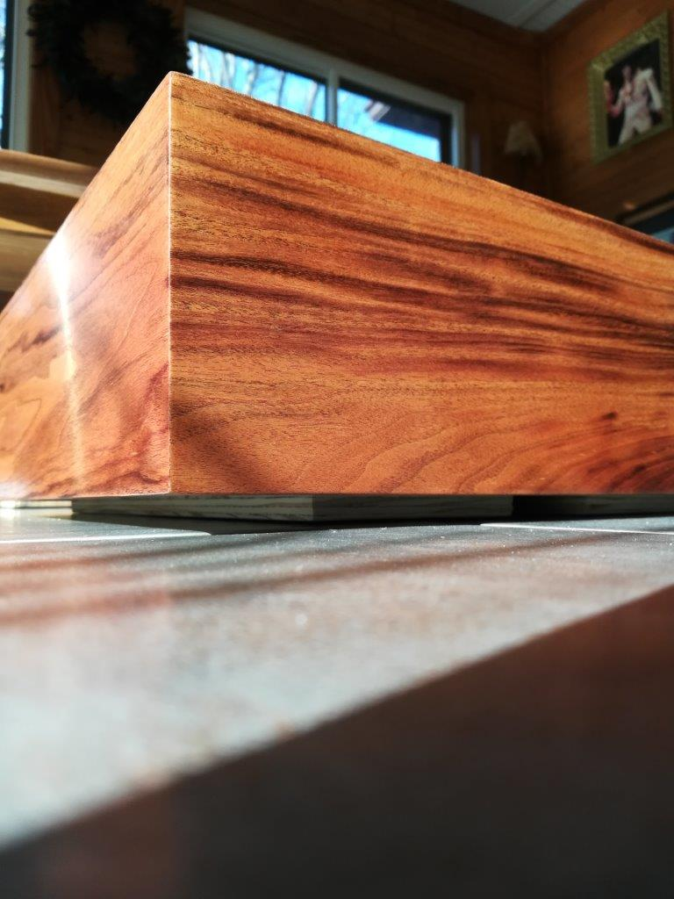
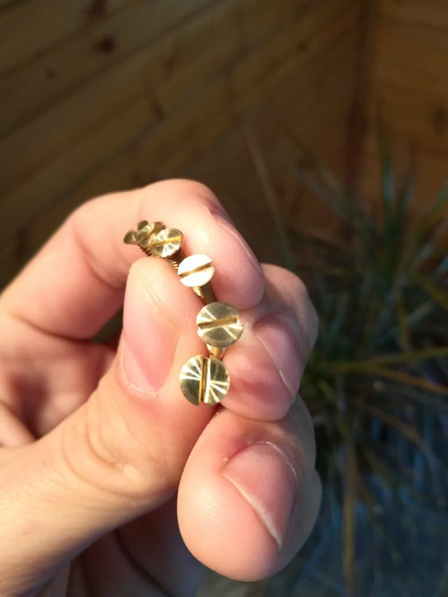
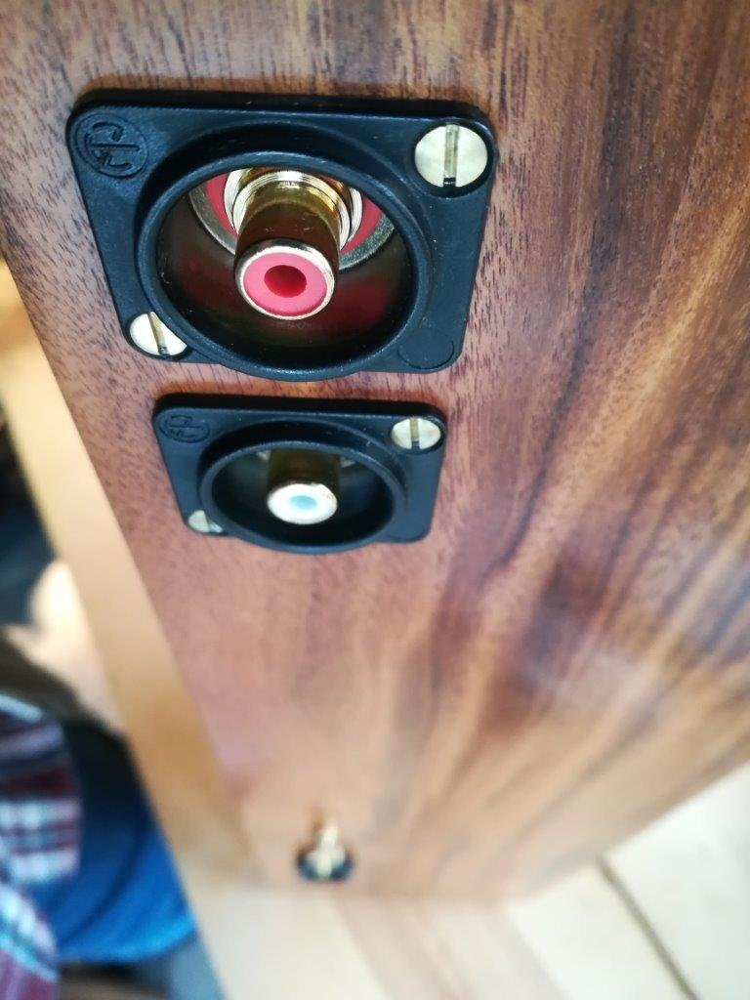

One of the strategies used to tame the rumble in idler drive turntables is to bolt the deck to a high mass plinth. My Micromatic was originally isolated from the suitcase-style box via springs. The reasons for this were many, including the fact that the speakers were housed in the same case, and that – judging by the ads from that era – they expected teens to put the changer on the floor, stack up a bunch of 45s, and do the twist right next to it.
There are many guides online for laminating layer after layer of plywood to build a high mass plinth which is acoustically dead, but I wanted something that looked a bit more classic. I decided to build a box-style plinth out of dense hardwood, and use different strategies to add mass and damp resonance, if needed.
A trip to my local Woodcraft turned up some Patagonian Rosewood, or Curupay, in about the right size. This wood frequently makes lists of the hardest, densest woods in the world, but unlike some of the species on those lists, I find it to work fairly easily. It isn’t overly oily, doesn’t heat up and scorch cutting tools as badly as, say, Ipe or Cocobolo. But more important to the selection of the wood for this project, I had already used it in my tube amp.
I have a Swedish-made, precision Nobex miter saw which I always use in joinery projects. It cuts at a very precise angle, with a small kerf blade (little waste) and allows careful control to avoid mishaps and tear-out. However, the 5.5″ wide boards I bought for the project wouldn’t fit on my Nobex. I could have ripped them down to a shorter height, but I wanted all of the weight possible in this plinth, and I wanted plenty of room inside, in case I wanted to line with other materials, add a preamp, etc.
I toyed with the idea of building a 45 degree shooting board for a plane, but then I’d have to buy a good hand plane. I have no table saw, nor the room for one. So I resorted to using the “chop saw,” a Dewalt 12″ miter. It is not very precise, so I had to be extremely careful in set up and execution to get the dimensions of the cut wood to meet the tolerances I sought. I think I succeeded. It wasn’t the finest miter I’ve ever cut, but a little hand work got the frame square and looking good.
Despite the density and relative oiliness of Patagonian Rosewood, I glued it with regular wood glue (Titebond II) and clamped with my Bessey band clamp. I see no signs that the glue didn’t adhere extremely well.
After getting the frame into rough shape, I glued/nailed an oak shelf inside to support the top plate, and oak corner braces to strengthen and support the bottom.
For a finish, I decided I wanted a hand-rubbed, satin sheen, but I was impatient. I picked up a bottle of Formby’s Tung Oil varnish, high gloss. This varnish is extremely thin, builds slowly, but dries quickly. I was able to put on a coat every 4 hours or so, rubbing down with 0000 steel wool in between. While I liked the Formby’s, I wish had started with a low-gloss version, and I also much prefer Birchwood Casey Tru-oil. I have used Tru-oil on gunstocks, jewelry boxes, canes, furniture – pretty much anything wood – and it is a wonder. Builds quickly, easy to apply, forgiving of mistakes, and gorgeous. Can be rubbed down to a satin sheen, or left very glossy. These photos show a progression from a couple coats, to several, then the finished sheen.

The top plate is made from a sheet of 1/8″ black acrylic laminated to a sheet of 1/2″ plywood. I cannot express how much I relied on cyanoacrylate glue during this project: “Super Glue.” I used Gorilla brand super glue because that was what was available at the grocery store on the way home from work.
I used my scroll saw to cut the plywood to shape, then glued on the acrylic and trimmed to size with a router.
The acrylic stayed covered with the protective paper right up until the point that I bolted in the steel deck of the turntable.
The bottom of the plinth is made from 1/2″ plywood, painted black. In keeping with the design philosophy to anchor the turntable solidly rather than isolate, I chose to use brass feet. I liked the size/style of Dayton Audio Speaker Spikes best. I also chose to use three feet instead of four. Three points define a plane, and cannot rock on an uneven surface. The turntable will be solidly anchored and will not vibrate due to imperfect contact. I also likes that these speaker spikes screw in, allowing for leveling, if necessary.
I think the details are what makes a project stand out, how you can tell the difference between a mass-produced consumer product and a bespoke heirloom quality piece. So I decided to use brass hardware. Unfortunately, I also knew that it would be extremely difficult to screw brass into this extremely hard, dense wood. A trick I learned long ago for screwing brass into hardwoods is to first use a steel screw of the same size, then wax the brass screw and insert into the pre-cut threaded hole. So that’s what I did…and promptly twisted the steel screw head off. After much cussing, and a half-hour of time lost drilling the rest of the screw out, I decided to drill through-holes in the wood and fasten with a nut on the inside.
I also think that flat-head screws are MUCH more attractive than Philips, and there are not many choices in brass screws. Another trick I learned to making a project stand out as something handmade and special is to polish every screw head which shows. Chucking the screw lightly in a drill (protect the threads with tape, if needed) and sanding the head with 320-1000 grit paper for a few seconds makes them look like they were hand-turned specially for the project.

Finally, in a bout of insanity, I even decided to “clock” the screws, which was easy because they are secured with a nut, not in the wood. This is a technique I picked up when visiting Frank Lloyd Wright’s Pope-Leighey House with a good friend. It is a mark of very detailed craftsmanship, and I think it really pushes a project over the top.

Tags: plinth, woodworking